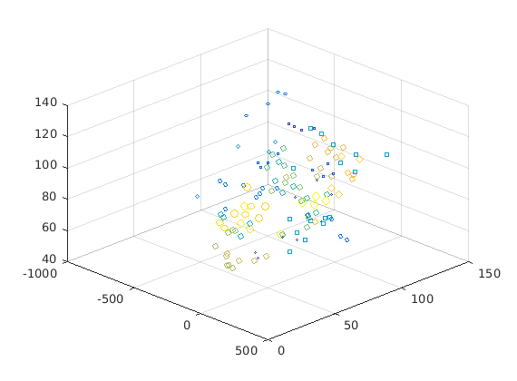

Contents
Initialization Face Datase
Read data will return train and test cell. Each cell contains data and its associated label.
tic clear databaseType=1; if(databaseType==1)% attr attDirpath='../../dataset/att_faces'; [attrTrainImgCell,attrTestImgCell,attImgHeight,attrImgWidth]=readData(attDirpath,'att_faces',1); trainImgCell=attrTrainImgCell; testImgCell=attrTestImgCell; imgHeight= attImgHeight;imgWidth=attrImgWidth; elseif(databaseType==2)% yale yaleDirpath='../../dataset/CroppedYale'; [yaleTrainImgCell,yaleTestImgCell,yaleImgHeight,yaleImgWidth]=readData(yaleDirpath,'yale',1); trainImgCell=yaleTrainImgCell; testImgCell=yaleTestImgCell; imgHeight= yaleImgHeight;imgWidth=yaleImgWidth; elseif(databaseType==3)% extended yale extendedYale= '/media/khursheed/4E20CD3920CD2933/wamp/ExtendedYaleB'; [extendedYaleTrainImgCell,extendedYaleTestImgCell,extendedYaleImgHeight,extendedYaleImgWidth]=readData(extendedYale,'extendedyale',1/5); trainImgCell=extendedYaleTrainImgCell; testImgCell=extendedYaleTestImgCell; imgHeight= extendedYaleImgHeight;imgWidth=extendedYaleImgWidth; end totalTrainSamples=size(trainImgCell{1},2);noOfClass=max(trainImgCell{2}); toc fprintf('**Reading of images Done.\n');
Elapsed time is 0.450301 seconds. **Reading of images Done.
1. Finding the EignFace : Yale Dateset
tic
[globalMean,Wpca,meanDeviatedImg]=eigenFaceUsingSVD(trainImgCell{1});
toc
fprintf('**Finding Wpca.Done.\n');
Elapsed time is 0.129407 seconds. **Finding Wpca.Done.
2. Fisher LDA
tic %[Wopt,classSpecificMean]=FisherFaceVarProjection(trainImgCell,Wpca); %[Wopt,classSpecificMean]=FisherFaceSampleProjection(trainImgCell,Wpca); [Wopt,normWopt,classSpecificMean]=FisherFaceVarProjMemOpt(trainImgCell,Wpca); toc fprintf('**Finding Fisher Faces.Done.\n');
Elapsed time is 0.052214 seconds. **Finding Fisher Faces.Done.
3. Fisher Faces
tic figure('name',strcat('Fisher Face:',int2str(i))); row=imgHeight;col=imgWidth; for i=1:4 subplot(2,2,i); testEigFace=Wopt(:,i); eigFaceImage = reshape(testEigFace,row,col); colormap(gray); imagesc(eigFaceImage); title(strcat('\fontsize{10}{\color{magenta}Fisher Face: ',int2str(i),'}')); colorbar; end toc;
Elapsed time is 0.292813 seconds.

4. Test Data
recognitionRate=imageRecognitionFisher(normWopt,globalMean,trainImgCell,testImgCell);
fprintf('Recognising Test data.Done.\n');
**Recognition-Rate:0.906250 Recognising Test data.Done.
5. Classification Plot
W=Wopt;
WSq=W.^2;
WDis=sum(WSq).^0.5;
WNorm= bsxfun(@times, W, 1./WDis);
projection = W'*testImgCell{1};
% Top three coordinate plot
x=projection(1,:);x=reshape(x,numel(x),1);
y=projection(2,:);y=reshape(y,numel(y),1);
z=projection(3,:);z=reshape(y,numel(z),1);
s =testImgCell{2};
c = testImgCell{2};
figure
scatter3(x,y,z,s,c)
view(45,35);
